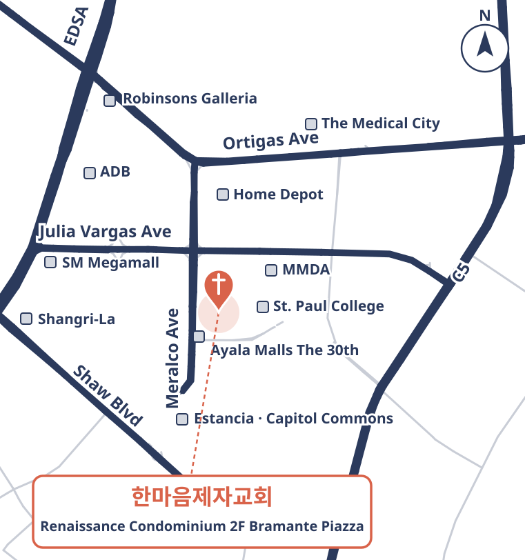

2F BRAMANTE PIAZZA CLUBHOUSE RENAISSANCE CONDOMINIUM MERALCO AVE BRGY UGONG ORTIGAS PASIG CITY
르네상스 콘도미니엄(Renaissance Condominium) 브라만테 피아자 클럽하우스 2층
그날 운행 경로는 둘 중 하나예요.
🚐 차량 이용은 교회로 미리 연락해 주세요
📞 교회 전화 0906 570 0085 ✉️ kimpalok1@gmail.com